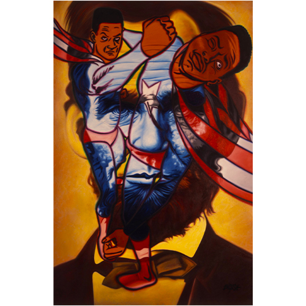
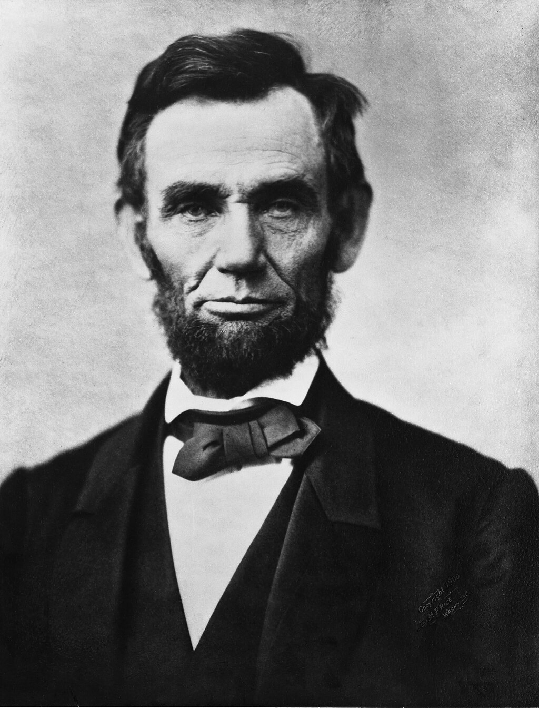

Notes
Also known as Black & White in Color.
This work draws on a well-known photographic portrait of Abraham Lincoln, produced in the mid-19th century.


Also known as Black & White in Color.
This work draws on a well-known photographic portrait of Abraham Lincoln, produced in the mid-19th century.
